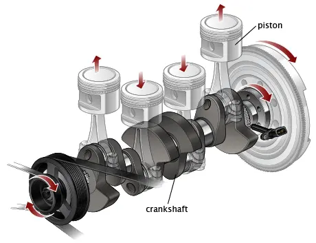
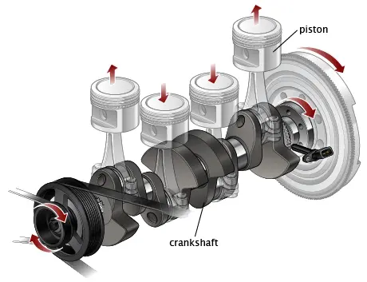
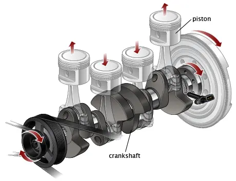

The internal combustion engine is a common machine that burns a fuel to convert chemical energy into mechanical energy.
Most people are familiar with the 'otto cycle four-stroke' piston engine. Most cars today use this design as well as generators.
This type of engine has four 'phases' to an engine cycle: intake, compression, combustion, and exhaust.
The easiest way to remember these steps is with the phrase: suck, squeeze, bang, and blow!
There are many other types of engines, but the four stroke piston engine is by far the most common.

Check out the Four-Stroke Engine Wikipedia page if you want more details.
© 2025 S Nandam